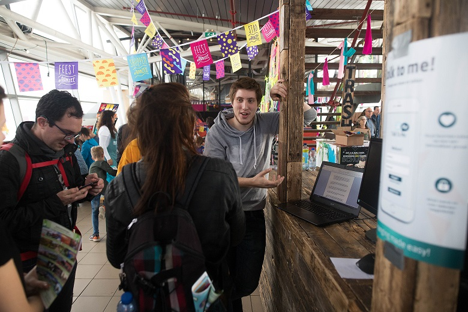

Voor dit projcet was het de opdracht om samen met mijn groep een digitale tool te maken om dove mensen te helpen bewegen in Den Haag. Onze opdrachtgever voor dit project was dan ook de gemeente Den Haag. Tijdens het interviewen van dove mensen kwamen we erachter dat er eigenlijk geen problemen waren bij het bewegen door Den Haag. Tijdens de presentaties die wij gaven was er ook een doof persoon aanwezig, Gomer. Gomer had elke keer veel moeite met het zoeken van een tolk voor deze presentaties en daarom hadden wij besloten om onze tool daarop te focussen. Mijn bijdrage aan dit project was het meehelpen tijdens het brainstormen over een concept. Ik heb een interview gehad met een grafisch ontwerper die zich richtte op het ontwerpen voor doven. Ook heb ik op het festival Mutesounds, een usabilty test uitgevoerd. hier kan je het uiteindelijke prototype bekijken.
